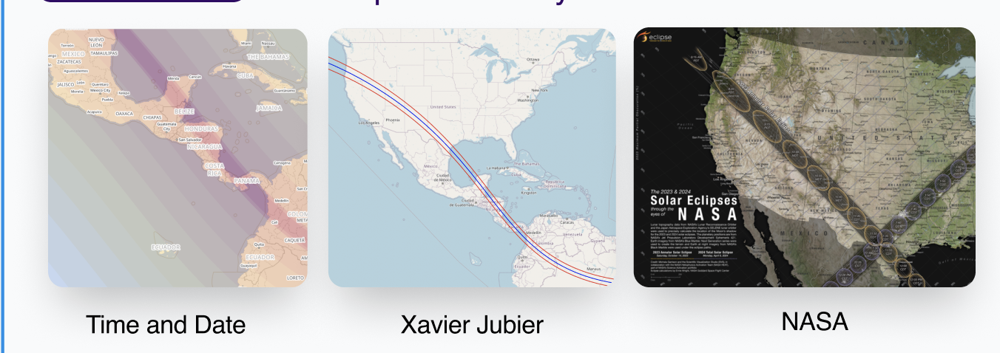
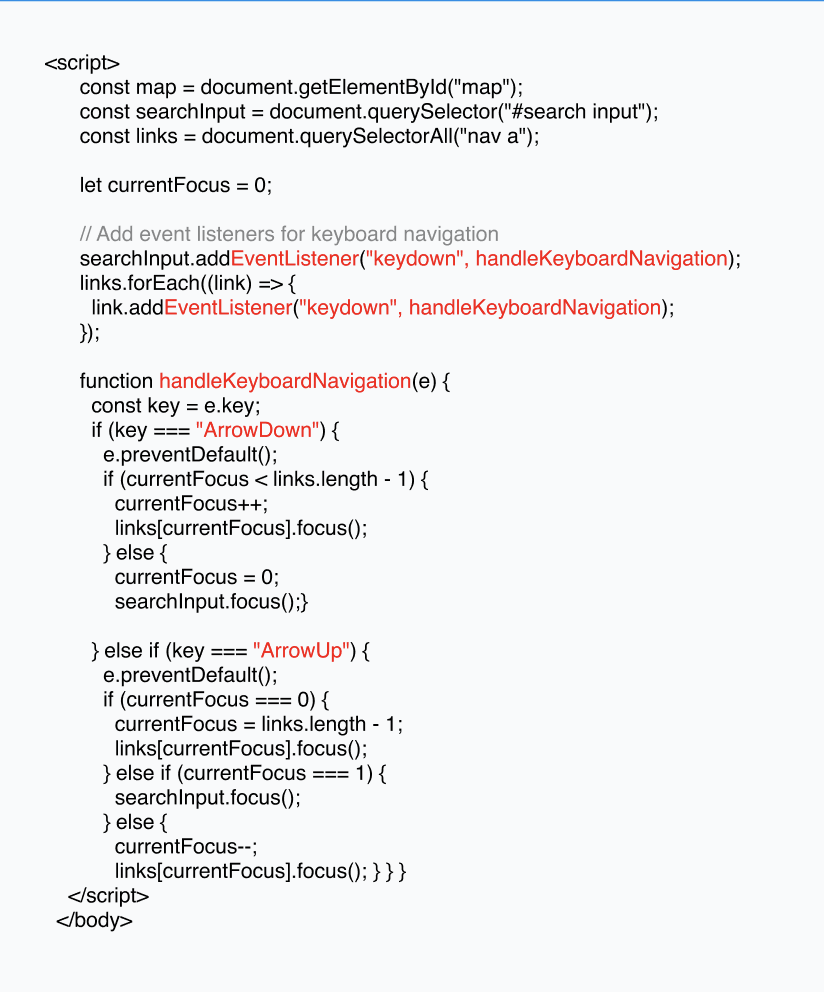

The goal of this project was to improve the accessibility and usability of NASA's Eclipse Soundscape Map by
refining the user experience and interface design.
🔍 Research
Before starting the design, thorough research was conducted to understand user needs, pain points, and the
problem areas in the existing map design.
Research Insights

🎨 Design
After gathering insights from research, I moved on to designing the wireframes and high-fidelity prototypes
that solved the key pain points identified.
Created user personas based on research findings.
Developed low-fidelity wireframes for initial user flow validation.
Iterated the design based on usability tests and feedback.
⚙️ Prototyping
The high-fidelity prototype was created using Figma to demonstrate the interactive elements and final design
of the mobile app. Below is the embedded prototype for the Eclipse Soundscape Map.
🧪 Identify Problems
Accessibility issues - the grayscale, obscure fonts, and lack of alternative text descriptions.Visual clarity
- Insufficient color contrast. Not allowing users to switch between dark mode and light mode.Not allowing
users to adjust speed rate of screenreader.
Users found the new navigation significantly easier to use.
Accessibility improvements were appreciated by visually impaired users.
Further iterations were made based on feedback for optimal usability.
"The new map is so much easier to navigate, and the accessibility features make a huge difference for
me as a visually impaired user."
⚡ Code Optimization
Throughout the development of this project, I implemented several optimizations to enhance the performance,
maintainability, and accessibility of the codebase. Below are key strategies I used to optimize the design:
2. Accessibility Improvements
Enhanced keyboard navigation for seamless user interaction by allowing users to navigate using the arrow
keys.
Ensured semantic HTML and used ARIA attributes to improve accessibility for screen readers.
Included alt attributes for all images to improve both accessibility and SEO.

4. SEO Optimization
Used descriptive meta tags and alt attributes to improve search engine discoverability.
Ensured that all elements on the page were optimized for mobile viewing (responsive design).
🚀 Final Product
After multiple iterations and testing, the final version of the Eclipse Soundscape Map was launched. The
final design resolved many of the pain points identified during research and significantly improved the user
experience.